，层lkT23】中节点 j 与层 l k-1 中节点 i 之间的权重，层 l k-1 中节点 i 的偏差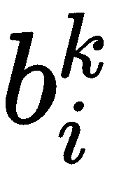。同一层中的节点之间没有连接，并且层是完全连接的。
，层lkT23】中节点 j 与层 l k-1 中节点 i 之间的权重，层 l k-1 中节点 i 的偏差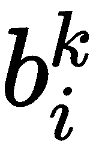。同一层中的节点之间没有连接，并且层是完全连接的。 的梯度。然后，根据学习速率 α ，梯度下降的每次迭代共同更新权重和偏差，表示如下:
的梯度。然后，根据学习速率 α ，梯度下降的每次迭代共同更新权重和偏差，表示如下:当你听到术语神经网络时，它会给你一种感觉，这是一种与大脑相关的生物学术语。我不得不坦率地告诉你，这是一个没有大脑的猜测，事实上，我们这样做是走在正确的道路上。我们会看到它是如何连接到那个。
神经网络在数据科学领域带来了一场革命。直到 2011 年，由于没有足够的计算能力，支持神经网络的人无法将其传播到他们想要的程度。但是，随着更便宜的计算解决方案和神经网络领域更多研究的出现，他们已经在数据科学和人工世界中掀起了风暴。神经网络是一种可以应用于监督和非监督学习的算法。借助更深层次的网络，他们能够为图像和文本等非结构化数据提供解决方案。
在本章中，我们将讨论以下主题:
首先让我解释一下什么是神经元以及它们是如何构成的。下图显示了一个典型的神经元:
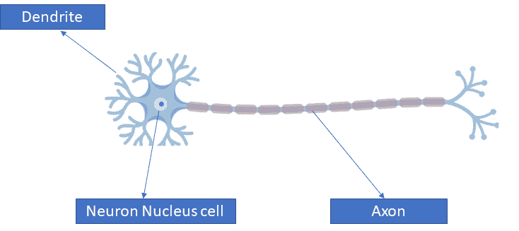
我们将神经元定义为通过电信号和化学信号接收、处理和传输信息的电可兴奋细胞。树突是它的一部分，接收来自其他神经元的信号。我们需要注意的一点是，仅仅单个神经元不能做任何事情，而有数十亿个神经元相互连接，这使得电化学信号流动，反过来，信息也可以通过它流动。信息通过轴突和突触传递。
说到神经网络，结构变化不大。让我们来看看。在中间，我们有一个神经元，这个神经元从另外三个神经元，X1，X2 和 X3，获得信号。所有三个神经元都由箭头连接起来，就像突触一样。这些神经元 X1、X2 和 X3 被称为输入层神经元。经过神经元后，我们得到输出值。有趣的是，人类大脑通过所有的传感器，如眼睛、耳朵、触觉和鼻子获得输入信号，所有的突触让这些电化学信号传递，输出为视觉、声音、触觉和嗅觉。在神经网络的情况下，遵循类似的过程。
假设我们有一组输入和输出，如下所示:
| 输入(X) | 输出(Y) |
| 2 | 四 |
| 3 | 6 |
| 四 | 8 |
| 5 | 10 |
| 6 | 12 |
在上表中，输入和输出可能看起来具有线性关系；然而，情况并非总是如此。另外，每次模型都需要初始化。让我们来理解初始化的含义。
模型初始化
Y = W. X
在上式中， Y 和 X 是已知的，基于此 W 必须被找出。但是，在一次迭代中找出 W 的值是罕见的。它必须首先被初始化。假设 W 用 3 的值初始化。这个等式结果如下:
Y= 3X
输入(X)
| 实际产量(Y) | 2 |
| 6 | 3 |
| 9 | 四 |
| 12 | 5 |
| 15 | 6 |
| 18 | 18 |
现在我们必须评估输出，以及它是否接近期望的输出。
损失函数
So far, the model has been randomly initialized and with this we have been able to get an output. In order to assess if the actual output is close to the desired output, loss function is introduced. It enables the generalization of the model, and figures out how well the model is able to reach the desired output.
我们可以看一下新表，它有实际输出和期望输出:
输入(X)
| 实际产量(Y a ) | 期望输出(Y) | 2 |
| 6 | 四 | 3 |
| 9 | 6 | 四 |
| 12 | 8 | 5 |
| 15 | 10 | 6 |
| 18 | 12 | 12 |
如果我们必须放下损失函数，它必须如下:
损失函数=期望输出-实际输出
然而，这样放置损失函数会带来两种值:负值和正值。在损失函数为负值的情况下，这将意味着网络作为期望输出<实际输出过冲，并且在相反的情况下(期望输出>实际输出)，网络将下冲。为了摆脱这种事情，我们会去争取绝对的损失:
输入(X)
| 实际输出(Y a ) | 期望输出(Y) | 损失= Y-YaT3】 | 绝对损失 | 2 |
| 6 | 四 | -2 | 2 | 3 |
| 9 | 6 | -3 | 3 | 四 |
| 12 | 8 | -4 | 四 | 5 |
| 15 | 10 | -5 | 5 | 6 |
| 18 | 12 | -6 | 6 | 6 |
总绝对损失= 20
采用这种绝对损失的方法对模型没有好处，就好像我们小心翼翼地看前面的表格，最小的损失是 2 个单位，最大的损失是 6 个单位。人们可能会觉得最大和最小损失之间的差异并不大(这里是 4 个单位)，但对模型来说可能很大。因此，采取了完全不同的路线。我们不会选择绝对损失，而是选择损失的平方:
输入(X)
| 实际输出(Y a ) | 期望输出(Y) | 损失=Y-Y 一一 | 损失的平方 | 2 |
| 6 | 四 | -2 | 四 | 3 |
| 9 | 6 | -3 | 9 | 四 |
| 12 | 8 | -4 | 16 | 5 |
| 15 | 10 | -5 | 25 | 6 |
| 18 | 12 | -6 | 36 | 36 |
现在，损失越多，处罚越多。它可以很容易地让我们损失更多的事情变得明显。
最佳化
但是这种方法在这种情况下是可行的，因为我们这里没有太多的参数，计算也不会太困难。然而，当我们有许多参数时，计算会受到影响。
这里，数学以微分的形式(最大值和最小值方法)来拯救我们，以便优化权重。函数在某一点的导数给出了该函数改变其值的速率。这里，我们要对损失函数求导。它要做的是通过轻微调整或改变重量来评估对总误差的影响。例如，如果我们试图改变权重，即 δW，W= W+ δW ，我们可以找出它是如何影响损失函数的。我们的最终目标是通过这个最小化损失函数。
我们知道最小值将在 w=2 到达；因此，我们在这里探索不同的场景:
w < 2 表示正损失函数，负导数，意味着重量的增加会降低损失函数
神经网络中的计算
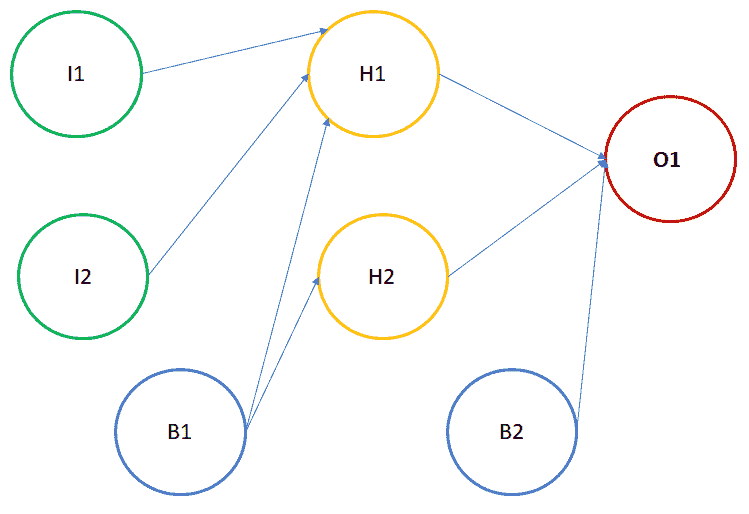
其中:
I1 :输入神经元 1
H1 活化的计算
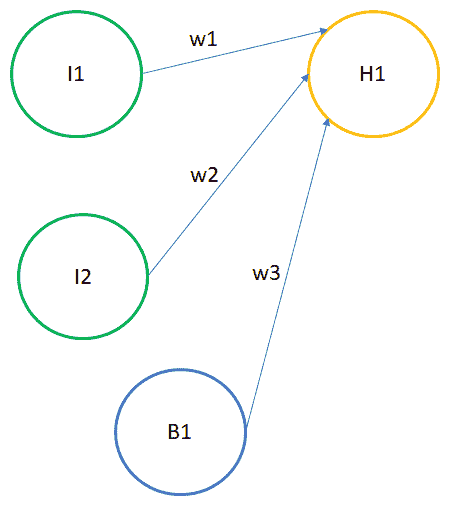
隐藏层如下式所示:
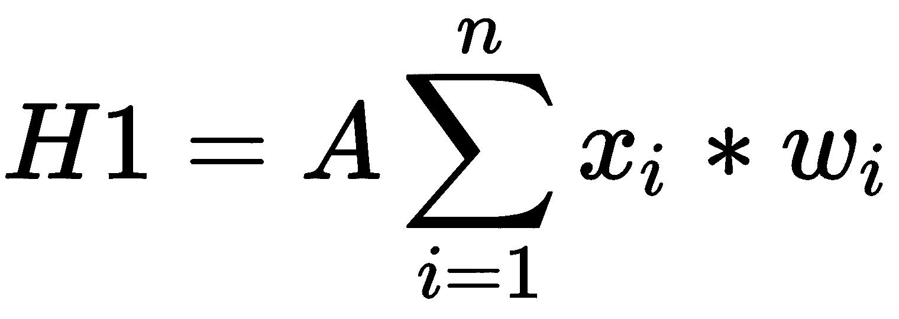
其中:
A :激活功能
x1T16】=I1=第一个神经元的输入值 1
激活功能
此外，激活功能的主要目的是将输入信号转换为输出信号。比方说，如果我们试图去掉一个激活函数，它将输出一个线性结果。线性函数是一次多项式，很容易求解，但同样，它无法捕捉各种要素之间的复杂映射，而这在非结构化数据的情况下是非常需要的。
非线性函数是那些次数超过一次的函数。现在，我们需要一个神经网络模型来学习和表示几乎任何东西和任何将输入映射到输出的任意复杂函数。神经网络也被称为通用函数逼近器。这意味着他们可以计算和学习任何函数。因此，激活函数是神经网络的组成部分，以使其学习复杂的功能。
激活功能的类型
该函数值的范围在 0 和 1 之间。这带来了很多问题:
The value of this function ranges between 0 and 1. It comes with a lot of issues:
这个函数的值介于-1 和+1 之间。然而，它仍然面临渐变消失的问题:
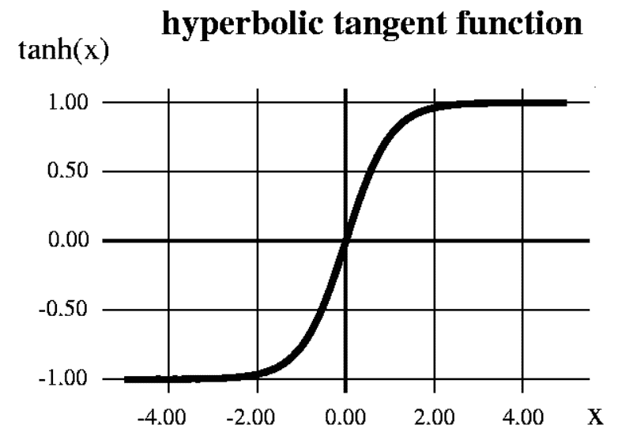
整流线性单位(ReLU) :数学上，我们用以下方式表示:
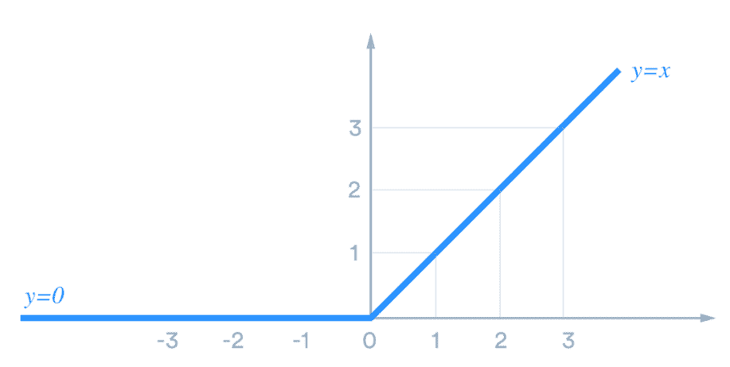
根据上图，ReLU 对于所有正值都是线性的，对于所有负值都是零。这意味着以下情况成立:
Going by the preceding diagram, ReLU is linear for all positive values, and zero for all negative values. This means that the following are true:
很长一段时间，权重被随机初始化。后来，人们意识到我们初始化网络的方式对模型有着巨大的影响。让我们看看如何初始化模型:
零初始化:在这种初始化中，所有的初始权重都设置为零。因此，所有层的所有神经元执行相同的计算，这导致产生相同的输出。会让整个深网徒劳无功。来自这个网络的预测几乎是随机的。直观来说，它不执行对称破缺。通常，在神经网络的前向传播过程中，每个隐藏节点得到一个信号，这个信号无非如下:
如果网络初始化为零，那么所有的隐藏节点将得到零信号，因为所有的输入将被乘以零。因此，无论输入值是多少，如果所有权重都相同，隐藏层中的所有单元也将相同。这被称为对称，为了有更多的信息捕捉一个好的模型，它必须被打破。因此，假设权重被随机初始化或具有不同的值:
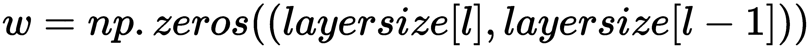
随机初始化:这种初始化有助于对称破缺。在这种方法中，权重被随机初始化为非常接近零。由于权重不等于零，每个神经元并不执行相同的计算:
He-et-al 初始化:该初始化取决于前一层的大小。它有助于获得成本函数的全局最小值。权重是随机的，但是范围根据前一层神经元的大小而不同:
反向传播
反向传播需要三个要素:
数据集:由成对的输入输出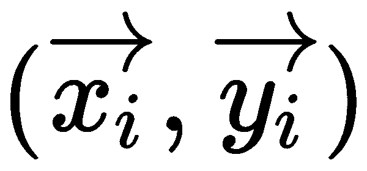组成的数据集，其中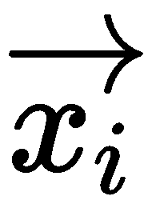是输入，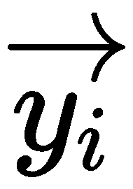是我们期望的输出。因此，取一组大小为 N 的这样的输入-输出，并表示为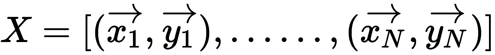。
，层lkT23】中节点 j 与层 l k-1 中节点 i 之间的权重，层 l k-1 中节点 i 的偏差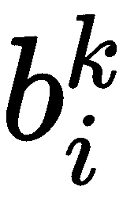。同一层中的节点之间没有连接，并且层是完全连接的。的梯度。然后，根据学习速率 α ，梯度下降的每次迭代共同更新权重和偏差，表示如下: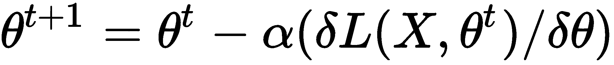
这里表示梯度下降迭代时神经网络的参数。
过度拟合
到目前为止，我们已经认识到这样一个事实，即当大量参数(在深度学习中)可供我们用来绘制和解释一个事件时，通常情况下，使用这些参数建立的模型往往会有很好的拟合度，并试图展示它有能力正确描述该事件。然而，任何模型的真正测试总是在看不见的数据上，我们能够评估模型在这些看不见的数据点上表现如何。我们希望我们的模型有一个泛化的属性，它将使模型能够在测试数据(看不见的)上得分，与经过训练的数据保持一致。但是，很多时候，当涉及到看不见的数据时，我们的模型无法进行归纳，因为模型没有了解事件的洞察力和因果关系。在这种情况下，人们可能会看到训练准确性和测试准确性之间的巨大差异，不用说，这不是我们从模型中寻求的。这种现象叫做过拟合。
在深度学习中，你可能会遇到数百万个参数，并且很可能会陷入过度拟合的陷阱。正如我们在第一章中定义的过拟合，当模型学习训练数据中的细节和噪声达到对新数据的模型性能产生负面影响的程度时，就会发生过拟合。
神经网络中过度拟合的预防
消失梯度
Neural networks have been a revelation in extracting complex features out of the data. Be it images or texts, they are able to find the combinations that result in better predictions. The deeper the network, the higher the chances of picking those complex features. If we keep on adding more hidden layers, the learning speed of the added hidden layers get faster.
然而，当我们进入反向传播时，这是在网络中向后移动，以找出损耗相对于权重的梯度，随着我们向第一层前进，梯度趋于变得越来越小。深层网络的最初几层学习速度较慢，而后面几层往往学习速度较快。这被称为消失梯度问题。
网络中的初始层很重要，因为它们负责学习和检测简单模式，并且实际上是我们网络的构建模块。很明显，如果它们给出了不正确的和不准确的结果，那么我们怎么能期望下一层和整个网络有效地执行并产生准确的结果呢？下图显示了在更陡的斜坡上滚动的球的图形:
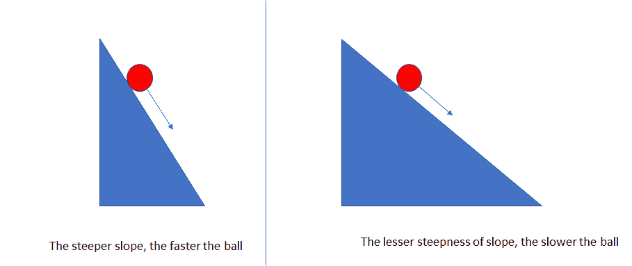
为了简单起见，我们假设有两个坡度:一个更陡，另一个不太陡。两个斜坡都有球滚下，很明显，球在较陡的斜坡上比在不太陡的斜坡上滚得更快。类似的，如果梯度大，学习和训练变得更快；否则，如果坡度不太陡，训练就会太慢。
根据反向传播直觉，我们知道这样一个事实，即诸如梯度下降的优化算法通过调整权重来缓慢地达到局部最优，从而降低了成本函数的输出。梯度下降算法通过梯度的负值乘以学习率( α )(较小)来更新权重:
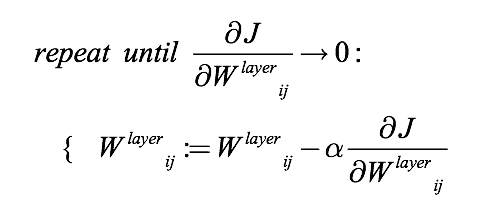
它说，我们必须重复，直到它达到收敛。然而，这里有两种情况。第一个是，如果迭代次数较少，那么结果的准确性会受到影响；第二是更多的迭代导致训练花费太多时间。这是因为由于梯度很小(我们知道 α 已经很小了)，权重在每次迭代中没有足够的变化。因此，权重不会移动到指定迭代中的最低点。
让我们来讨论一下激活函数，它可能会对消失梯度问题产生影响。这里，我们讨论 sigmoid 函数，它通常用作激活函数:

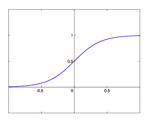
它将所有输入值转换成一个在 (0，1) 之间的值范围。如果我们必须找出 sigmoid 函数的导数，那么:
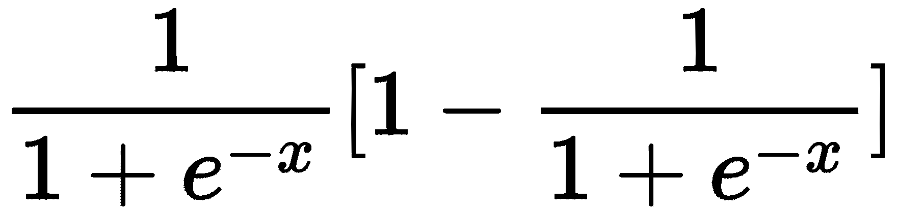
让我们现在画出来:
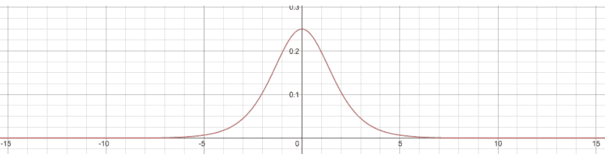
很明显，导数达到了最大值 0.25。因此，它所在的值的范围是 (0，1/4) 。
典型的神经网络如下图所示:
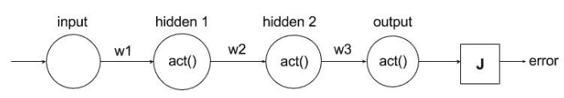
一旦权重参数被初始化，输入被乘以权重并通过激活函数传递，最后，我们得到一个代价函数( J )。随后，通过梯度下降进行反向传播以修改权重，从而最小化 J 。
为了计算相对于第一重量的导数，我们使用链式法则。结果会是这样的:
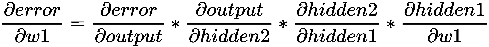
如果我们只是试图研究前面表达式中间的导数，我们会得到以下结果:
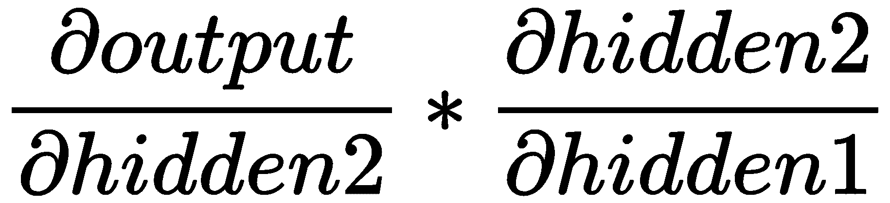
第 1 部分—从输出到隐藏 2。
由于输出是第二个隐藏单元的激活，表达式结果如下:
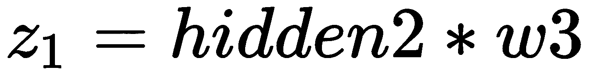

类似地，对于第 2 部分，从隐藏 2 到隐藏 1，表达式结果如下:
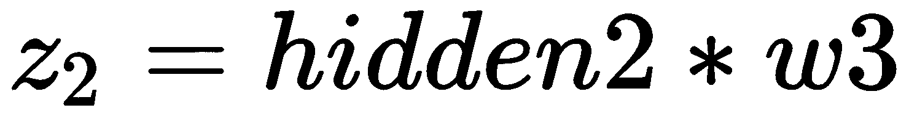
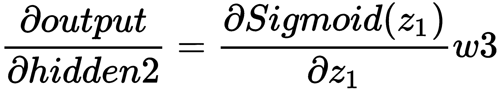
将所有东西放在一起，我们得到以下结果:

我们知道，sigmoid 函数的导数的最大值是 1/4，如果权重已经用标准偏差 1 和平均值 0 初始化，则权重通常可以取-1 和 1 之间的值。会导致整个表情变小。如果有一个深度网络需要训练，那么这个表达式将继续变得更小，结果，训练时间将变得缓慢。
克服消失梯度
为了应对这种情况，ReLU 函数提供了帮助:
ReLU(x)= max(0，x)
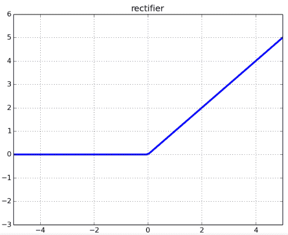
如果输入为负或小于零，函数输出为零。在第二种情况下，如果输入大于零，那么输出将等于输入。
让我们对这个函数求导，看看会发生什么:
案例 1 : x < 0 :
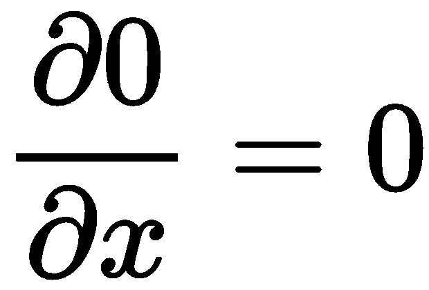
案例二 : x > 0 :

如果我们必须绘制它，我们会得到以下结果:
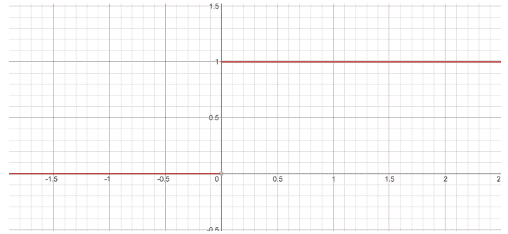
所以，ReLU 的导数不是 0 就是 1。这个图看起来像一个阶跃函数。现在，我们可以看到，我们不会面临梯度消失的问题，因为导数的值不在 0 和 1 之间。
然而，这仍然不是真的。当输入值碰巧是负的，并且我们知道在这种情况下导数是零时，我们可能仍然会面临这个问题。通常，加权总和不会以负数结束，如果我们担心出现这种问题的可能性，我们确实可以将权重初始化为正数和/或在 0 到 1 之间归一化输入。
对于这种情况，仍然有一个解决方法。我们得到了另一个叫做 Leaky ReLU 的函数，它出现在下面的公式中:
RELU (x) =马克斯(εx，x)
这里，ε值通常为 0.2–0.3。我们可以绘制它，如下所示:
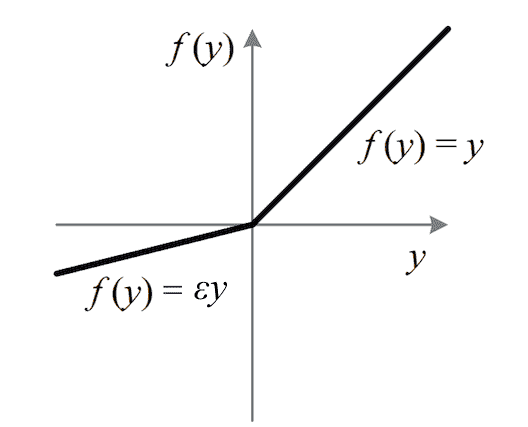
递归神经网络
神经网络能这样运作吗？传统系统通常不能以这种方式运行，这是一个主要缺点。这就是递归神经网络发挥作用的地方。它带有一个允许信息流动的回路:
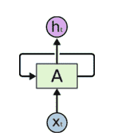
这里，神经网络将输入作为XtT9】并以htT13】的形式抛出输出。递归神经网络由相同网络的多个副本组成，这些副本将消息传递给后继者。
如果我们打开前面的网络，它看起来会像下面这样:
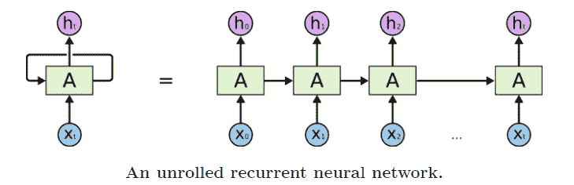
这种链状性质揭示了递归神经网络与序列和列表密切相关。它们是用于此类数据的神经网络的自然架构。由于网络有内部存储器，rnn 能够记住它们收到的输入，这反过来使它们能够得出准确和精确的结果和预测。
到目前为止，我们一直在谈论顺序数据。但是我们需要正确理解这个术语，顺序数据。这种形式的数据是订单数据，其中在时间 t 的数据和时间 t-1 的数据之间存在关系。这种数据的一个例子可以是金融数据、时间序列数据、视频等等。RNNs 允许我们对向量序列进行操作。例如，请看下图:
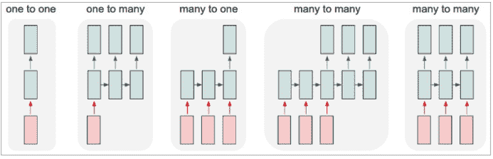
每个矩形代表一个向量，箭头代表函数。输入向量为红色，输出向量为蓝色，绿色向量代表 RNN 状态:
从固定大小的输入到输出，普通模式的处理可以不包括 RNN
Recurrent neural networks function just right when it comes to short-term dependencies. What this means is that, if there is just a single statement to be dealt with, a neural network operates fine. For example, if there is a sentence, India's capital is __, in this scenario we would invariably get the correct result as this is a universal statement and there is nothing like a context here. This statement has no dependency on the previous sentence and here, there is no previous sentence either.
因此，预测将是印度的首都是新德里。
毕竟，香草 RNN 不理解输入背后的背景。我们用一个例子来理解:
呆在印度意味着我被板球所吸引。但是，10 年后，我为了工作搬到了美国。
印度流行的游戏是 __ 。
我们可以看到，在第一句话中有一个上下文，然后在第二句话中它发生了变化。然而，网络必须在第一个预测的基础上进行预测。很有可能在印度流行的游戏是板球，但上下文在这里起了作用，它必须被网络理解。简单的 RNN 在这里是失败的。
这就是长短期记忆(LSTM)出现的原因。
用例
我们将研究一个时间序列问题。我们得到了谷歌股票价格数据集。一个是训练，另一个是测试。我们现在来看一个预测 Google 股票价格的用例:
让我们从导入库开始:
import numpy as np
import matplotlib.pyplot as plt
import pandas as pd
dataset_train = pd.read_csv('Google_Stock_Price_Train.csv')
training_set = dataset_train.iloc[:, 1:2].values
from sklearn.preprocessing import MinMaxScaler
sc = MinMaxScaler(feature_range = (0, 1))
training_set_scaled = sc.fit_transform(training_set)
X_train = []
y_train = []
for i in range(60, 1258):
X_train.append(training_set_scaled[i-60:i, 0])
y_train.append(training_set_scaled[i, 0])
X_train, y_train = np.array(X_train), np.array(y_train)
X_train = np.reshape(X_train, (X_train.shape[0], X_train.shape[1], 1))
from keras.models import Sequential
from keras.layers import Dense
from keras.layers import LSTM
from keras.layers import Dropout
regressor = Sequential()
regressor.add(LSTM(units = 50, return_sequences = True, input_shape = (X_train.shape[1], 1)))
regressor.add(Dropout(0.2))
regressor.add(LSTM(units = 50, return_sequences = True))
regressor.add(Dropout(0.2))
regressor.add(LSTM(units = 50, return_sequences = True))
regressor.add(Dropout(0.2))
regressor.add(LSTM(units = 50))
regressor.add(Dropout(0.2))
regressor.add(Dense(units = 1))
regressor.compile(optimizer = 'adam', loss = 'mean_squared_error')
regressor.fit(X_train, y_train, epochs = 100, batch_size = 32)
dataset_test = pd.read_csv('Google_Stock_Price_Test.csv')
real_stock_price = dataset_test.iloc[:, 1:2].values
dataset_total = pd.concat((dataset_train['Open'], dataset_test['Open']), axis = 0)
inputs = dataset_total[len(dataset_total) - len(dataset_test) - 60:].values
inputs = inputs.reshape(-1,1)
inputs = sc.transform(inputs)
X_test = []
for i in range(60, 80):
X_test.append(inputs[i-60:i, 0])
X_test = np.array(X_test)
X_test = np.reshape(X_test, (X_test.shape[0], X_test.shape[1], 1))
predicted_stock_price = regressor.predict(X_test)
predicted_stock_price = sc.inverse_transform(predicted_stock_price)
plt.plot(real_stock_price, color = 'red', label = 'Real Google Stock Price')
plt.plot(predicted_stock_price, color = 'blue', label = 'Predicted Google Stock Price')
plt.title('Google Stock Price Prediction')
plt.xlabel('Time')
plt.ylabel('Google Stock Price')
plt.legend()
plt.show()
摘要
我们介绍了 RNN 的概念，并研究了一个关于谷歌股票价格数据集的用例。在下一章，我们将学习时间序列分析。
We introduced the concept of RNN, and studied a use case regarding the Google stock price dataset. In the next chapter, we will study time series analysis.